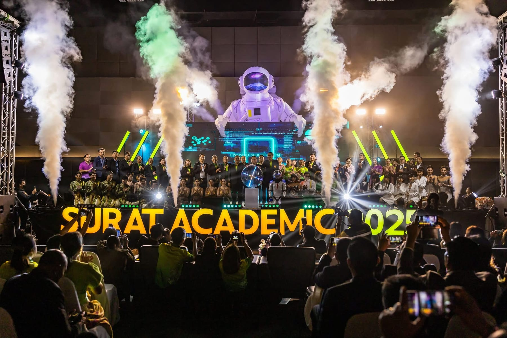
EVENT / STAGE / RUN TEAM
SURAT ACADEMIC 2025
ดูรายละเอียดโครงการและแกลเลอรี
มากกว่าการจัดงาน คือการสร้างประสบการณ์ที่มีความหมาย เราเปลี่ยนทุกไอเดียให้เป็นงานที่สะท้อนตัวตนองค์กรและสร้างความประทับใจ
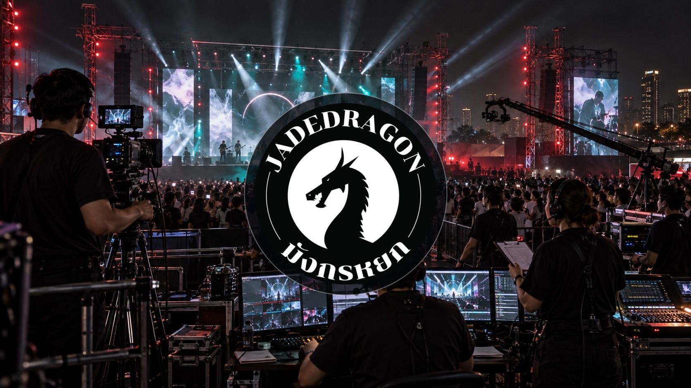
CREATIVE THINKING · PROFESSIONAL PLANNING · MEMORABLE EXPERIENCES
ที่ Jade Dragon Group Event & Organizer เราเชื่อว่าอีเวนต์ที่ดีไม่ใช่เพียงงานที่สวยงามหรือยิ่งใหญ่ แต่ต้องสื่อสารตัวตนขององค์กร สร้างความรู้สึกให้ผู้เข้าร่วม และทิ้งความประทับใจแม้งานจะจบลง
เราคือทีมสร้างสรรค์และบริหารจัดการอีเวนต์ครบวงจร ตั้งแต่คิดคอนเซปต์ วางแผน ออกแบบ ผลิตสื่อ ระบบเวที แสง สี เสียง และโปรดักชัน ไปจนถึงบริหารจัดการหน้างาน สำหรับองค์กร ภาครัฐ และเอกชน
เราไม่ได้มองเพียงว่างานจะเกิดขึ้นได้อย่างไร แต่คิดไปถึงว่างานนั้นจะสร้างคุณค่าอะไรให้กับลูกค้าและผู้เข้าร่วม
ด้วยความคิดสร้างสรรค์ ความเข้าใจในรายละเอียด และความใส่ใจในทุกขั้นตอน เรามุ่งมั่นสร้างงานที่ตอบโจทย์เป้าหมาย สะท้อนภาพลักษณ์องค์กร และสร้างความทรงจำที่แตกต่าง
ชมผลงานของเรา ↓เราเชื่อว่าทุกกิจกรรมมีเรื่องราวที่แตกต่าง และทุกเรื่องราวสามารถสร้างความประทับใจได้ในแบบของตัวเอง

ดูรายละเอียดโครงการและแกลเลอรี
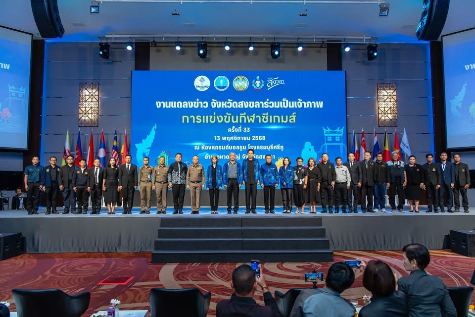
งานอบรม สัมมนา งานแถลงข่าว และกิจกรรมเชิงวิชาการ — ดูแกลเลอรี 8 ภาพ
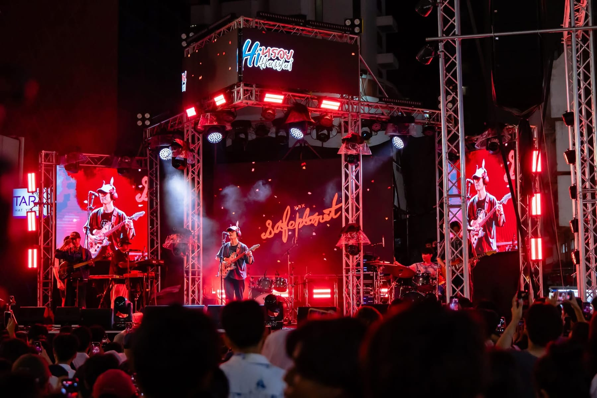
เวที การแสดง และบรรยากาศผู้ชม — ดูแกลเลอรี 8 ภาพ
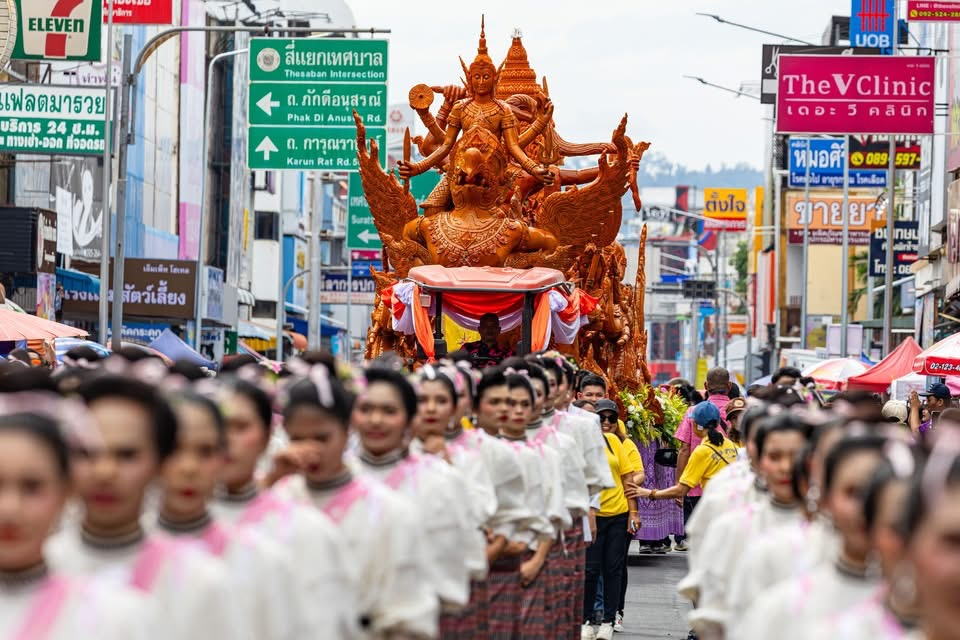
ขบวนแห่ พิธีการ และการแสดง — ดูแกลเลอรี 9 ภาพ
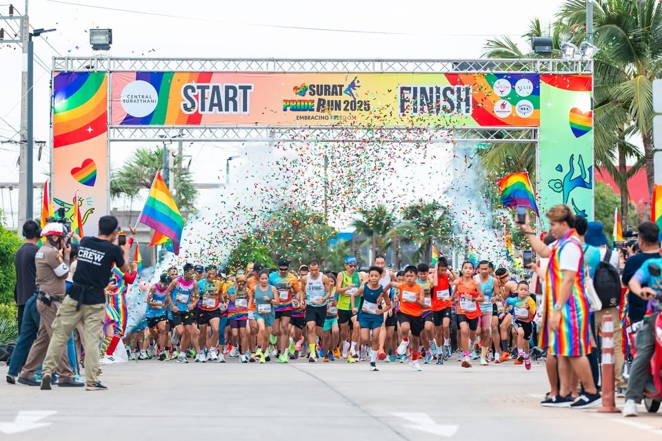
ดูรายละเอียดโครงการและแกลเลอรี
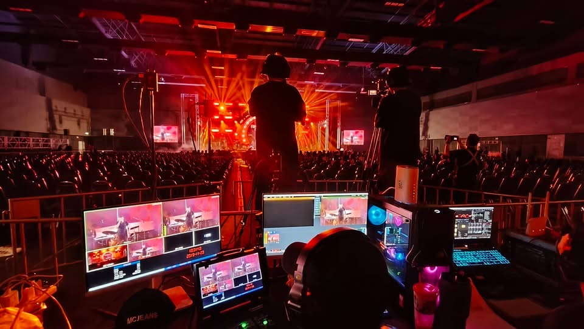
ทีมกล้องและจุดควบคุมภาพ — ดูแกลเลอรี 11 ภาพ
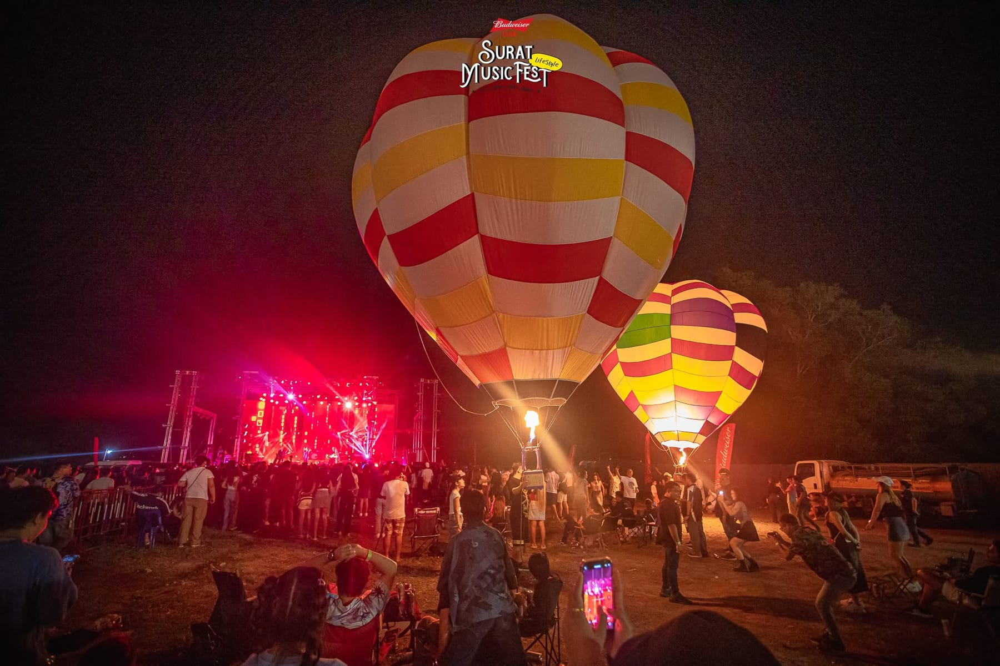
ดูรายละเอียดโครงการและแกลเลอรี
สัมผัสบรรยากาศ ความคิดสร้างสรรค์ และพลังของทุกอีเวนต์ ผ่านวิดีโอผลงานจริงจาก JadeDragon
วิดีโอบรรยากาศงาน คอนเสิร์ต งานเทศกาล พิธีเปิด งานถ่ายทอดสด ระบบภาพ ทีมกล้อง ห้องควบคุม และผลงานรวมของ Jadedragon
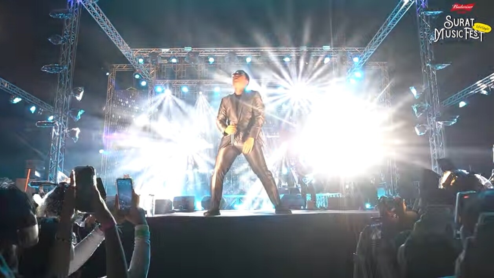
บรรยากาศเวที ดนตรี และสีสันของเทศกาล
ชมบน Facebook ↗สีสันกิจกรรม งานวิ่ง และบรรยากาศสงกรานต์
ชมบน Facebook ↗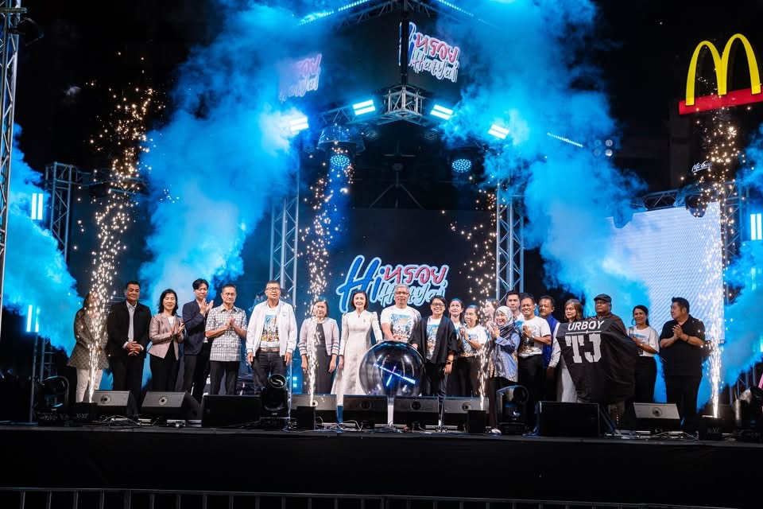
โดยสำนักงานการท่องเที่ยวและกีฬาจังหวัดสงขลา
ชมบน Facebook ↗ภาพบรรยากาศประเพณีและกิจกรรมสำคัญของจังหวัด
ชมบน Facebook ↗ผลงานการถ่ายทำ การผลิตวิดีโอ และวิดีโอรีวิวของ Jadedragon
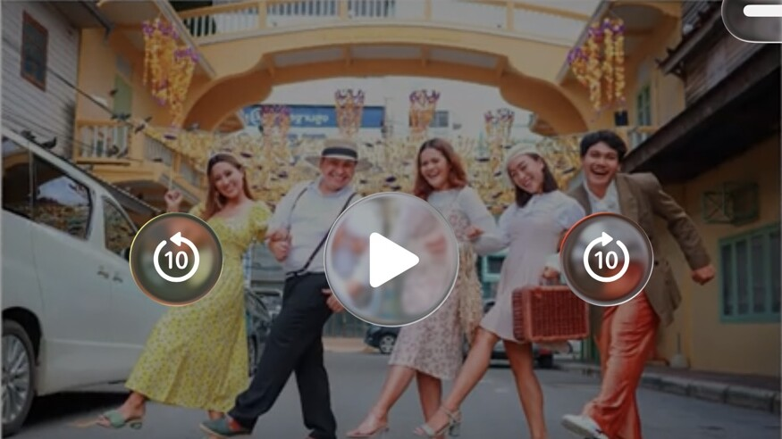
เรื่องราวการท่องเที่ยวและเสน่ห์ของย่านเมืองเก่า
ชมบน YouTube ↗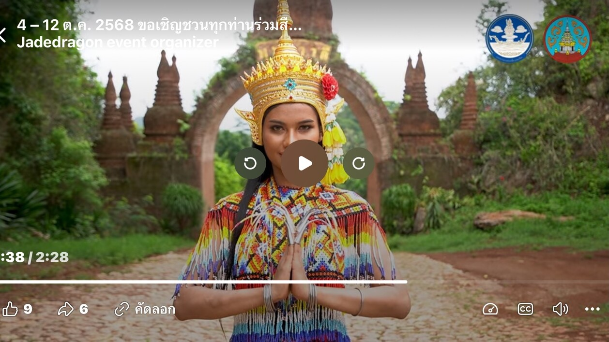
สื่อประชาสัมพันธ์แหล่งท่องเที่ยวและอัตลักษณ์ท้องถิ่น
ชมบน Facebook ↗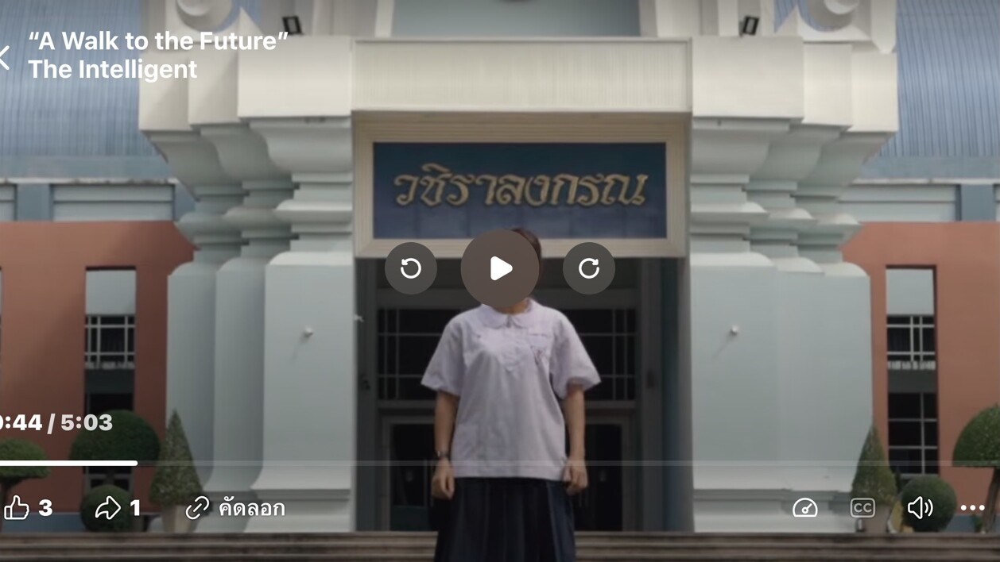
ผลงานวิดีโอสำหรับสถาบันการศึกษา
ชมบน Facebook ↗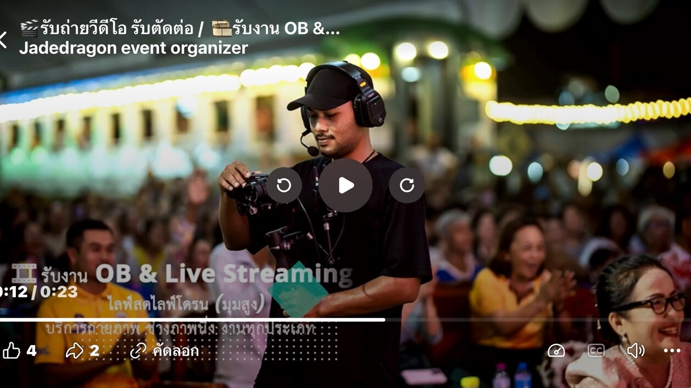
บริการผลิตภาพเคลื่อนไหวครบวงจร
ชมบน Facebook ↗ไม่ว่าคุณจะมีเพียงไอเดียเล็ก ๆ หรือกำลังวางแผนอีเวนต์ขนาดใหญ่ ให้ Jade Dragon เป็นทีมเบื้องหลังที่ช่วยทำให้ทุกความคิดเกิดขึ้นจริง
มาร่วมสร้างประสบการณ์ครั้งต่อไปด้วยกัน
กรอกรายละเอียดเบื้องต้น แล้วส่งให้ทีม Jadedragon ทาง LINE หรืออีเมล
ภาพหน้างาน เบื้องหลัง และโพสต์ใหม่จากทีม Jadedragon
ติดตามงานล่าสุดและบรรยากาศการทำงานของเราได้จากโพสต์บนเพจ
ดูโพสต์บน Facebook ↗ฟีดนี้โหลดเนื้อหาจาก Facebook ซึ่งอาจใช้คุกกี้ หากฟีดไม่แสดงหรือขอให้เข้าสู่ระบบ สามารถเปิดดูที่เพจได้โดยตรง
Jadedragon event organizer